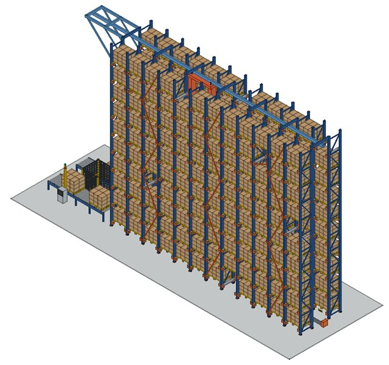
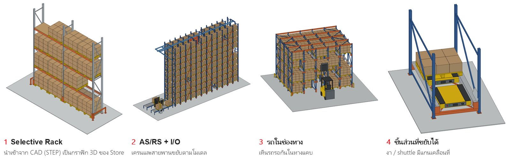

2.5 ระบบขนถ่ายในคลังสินค้าอัตโนมัติ
2. สินค้าคงคลังและแบบจำลองเสมือนจริงด้วย Plant Simulation · ภาคทฤษฎี
วัตถุประสงค์การเรียนรู้
- เปรียบเทียบระบบขนถ่าย คน, Forklift, AGV, AMR และ AS/RS และบอกว่าแต่ละแบบสร้างด้วย Object อะไรได้
- อธิบายการป้อนข้อมูลสินค้าเข้า–ออก การใช้ Method และการแสดงข้อมูลสินค้าคงคลังในแบบจำลองได้
- ตรวจแบบจำลองด้วย Verification และ Validation ก่อนนำผลไปใช้ตัดสินใจได้
เริ่มจากตัวเลข: Forklift 3 คัน → 1 คัน
สยามพาร์ทใช้ Forklift 3 คันมานาน ไม่มีใครเคยวัดว่ารถทำงานจริงกี่เปอร์เซ็นต์ของเวลา พอจำลองพบว่าลดเหลือคันเดียวก็ยังส่งทันเป้า 20 นาที ประหยัดได้ปีละ 650,000 บาท — ก่อนคิดซื้อ AGV หรือ AMR ต้องรู้ก่อนว่าระบบเดิมใช้งานได้เต็มที่หรือยัง
1. คนและรถขน
บันไดสู่คลังอัตโนมัติ: เปลี่ยนทีละขั้น วัดทุกขั้น
- 1คน — เดินขนด้วยรถลาก ยืดหยุ่น ลงทุนต่ำ
- 2Forklift — ยกพาเลท เร็วขึ้น แต่ต้องมีคนขับ
- 3AGV — อัตโนมัติ วิ่งตามเส้นทางที่กำหนด
- 4AMR — อัตโนมัติ หาเส้นทางเอง หลบคน
- 5AS/RS — เครนเก็บและหยิบในชั้นสูงเอง
ลำเลียงสินค้าด้วยคน: WorkerPool · Broker
- WorkerPool — ห้องพักของพนักงาน กำหนดจำนวนคนและความเร็วเดิน และผูกกับกะทำงาน (ShiftCalendar)
- Broker — คนกลางจับคู่งานกับคน เมื่อมีงาน ส่งคนที่ว่างไป คนเดียวทำได้หลายจุด
- ผลที่วัดได้ — utilization ของคน เวลารอคน งานค้างตอนเลิกงาน และระยะเดินต่อวัน
ในแบบจำลองรุ่นทดลอง คนไม่ตรงกับช่วงงานหนักทำให้พาเลทค้าง 11 พาเลทตอนเลิกงาน — ฝึกในบท 2.4
Forklift และ AGV: รถที่วิ่งบนเส้นทาง
| Forklift | AGV | |
|---|---|---|
| สร้างในโปรแกรม | Transporter บน Track (ทางวิ่ง) | Transporter บน Track แบบวงรอบทางเดียว |
| ลักษณะ | ตั้งความเร็ว เวลายก–วาง ต้องมีคนขับ พักเที่ยงรถหยุด (ผูกกับกะ) | วิ่งตามเส้นทางที่กำหนดเท่านั้น ช้ากว่าแต่ไม่ต้องมีคนขับ ทำงานได้ต่อเนื่อง |
| คาร์บอน | ดีเซล → นับลิตร เป็นคาร์บอน Scope 1 | ไฟฟ้า → นับ kWh เป็นคาร์บอน Scope 2 |
วาด Track และให้รถ Transporter วิ่งขนชิ้นงาน — ฝึกในบท 2.6
AMR: หุ่นยนต์ที่หาเส้นทางเอง
วิธีสร้างในโปรแกรม
- รถวิ่งอิสระบนพื้นที่ ไม่ต้องวาดทาง
- หาเส้นทางสั้นที่สุดเอง หลบสิ่งกีดขวาง
- Method สั่ง: ไปรับที่ไหน ส่งที่ไหน
- แบตเตอรี่: kWh = Ah × V ÷ 1,000
คำถามที่แบบจำลองตอบ
- ต้องใช้กี่คันจึงทันเป้า
- รถรอกันตรงไหน (จุดคอขวด)
- ต้องชาร์จเมื่อไร แบตเตอรี่พอทั้งกะไหม
- เวลายก–วางมีผลแค่ไหน
ในแบบจำลองสยามพาร์ท AMR คันเดียวไม่พอ สองคันพอ — ฝึกสร้าง AMR ในบท 2.7
Forklift · AGV · AMR บนงานเดียวกัน
วัดจากแบบจำลองสยามพาร์ท งาน 120 เที่ยวต่อวัน
| รถ | ลักษณะ | ต้องใช้ | lead time | ต้นทุน/วัน (บาท) | kgCO₂e/ออเดอร์ |
|---|---|---|---|---|---|
| Forklift ดีเซล | 2.5 ม./วินาที · ต้องมีคนขับ · พักเที่ยงรถหยุด | 1 คัน | 14.7 นาที | 2,986 | 0.130 |
| AGV | 1.0 ม./วินาที · วิ่งตามวงรอบทางเดียว | 2 คัน | 14.8 นาที | 3,618 | 0.030 |
| AMR | 1.2 ม./วินาที · หาทางสั้นสุดเอง | 2 คัน | 8.8 นาที | 3,610 | 0.017 |
2. ข้อมูล Method และสต็อก
การป้อนข้อมูลสินค้าเข้า–ออก
| ข้อมูล | หน้าตาตาราง | ใส่ที่ไหนในแบบจำลอง |
|---|---|---|
| สินค้าเข้า (รถผู้ขาย) | เวลา · ชื่อรถ · รหัสสินค้า · จำนวนพาเลท | Source → Delivery table (ตาราง Deliveries) |
| สินค้าออก (ออเดอร์) | เวลา · เลขออเดอร์ · รหัสสินค้า · จำนวน | ตาราง Orders → Method หยิบตามเวลา |
| ข้อมูลสินค้า | รหัส · กลุ่ม ABC · ยอดใช้ · EOQ · ROP · ช่องเก็บ | ตาราง Products |
| สต็อกตั้งต้น | จำนวนพาเลทต่อรหัสตอนเริ่มวัน | Method Init เติมชั้นวางก่อนเริ่ม |
| ข้อมูลจากระบบจริง | ไฟล์ Excel / CSV จาก WMS หรือ ERP | นำเข้าตาราง (ฝึกในบท 3.2) |
Method กับแบบจำลองคลัง: กฎการทำงานที่ทำให้โมเดลคิดได้
Method ในคลังของเราทำอะไร
Init— เติมสต็อกตั้งต้นตอนเริ่ม- เก็บเข้าช่อง — เลือกช่องว่างตามกลยุทธ์
- หยิบ — หาพาเลทของสินค้าที่สั่ง แล้วส่งออก
- สั่งซื้อ — สต็อก ≤ ROP → สั่ง EOQ และบันทึก
StockLog
ผู้เรียนต้องรู้แค่ไหน
- เขียน Method สั้น ๆ 5–10 บรรทัดตามบทเรียน ไม่ต้องเป็นโปรแกรมเมอร์
- ภาษา SimTalk:
if·for·ตาราง[คอลัมน์, แถว] - Method ยาว ๆ ของรถอัตโนมัติมีให้ในไฟล์พร้อมใช้ เปิดอ่านได้
- ผู้ช่วย AI ช่วยอธิบายหรือแก้ Method ได้
แสดงข้อมูลสินค้าคงคลัง: ให้คนดูเข้าใจทันที
| แบบ | แสดงอะไร | ใช้ทำอะไร |
|---|---|---|
| กราฟ (Chart) | ระดับสต็อกตามเวลา (ฟันเลื่อย) · utilization ของคน / รถ | ตรวจว่าแบบจำลองทำงานถูก |
ตาราง (StockLog) | บันทึกทุกครั้งที่ของเข้า–ออก | นำออกไป Excel วิเคราะห์ต่อ หรือใช้สอน AI |
| ตัวเลขบนหน้าจอ | สต็อกปัจจุบันต่อรหัส · ของขาด · กระดาน KPI | เห็นระหว่างรัน |
| สีใน 3D | ชั้นวางเปลี่ยนสีตามสินค้า / ABC | เห็นช่องว่าง ช่องเต็ม ผู้บริหารเข้าใจเร็ว |
เลือกแบบที่เหมาะกับคนดู: ทีมงานดูตาราง ผู้บริหารดูกราฟและภาพ
3. AS/RS · 3D · ตรวจแบบจำลอง
AS/RS ด้วย Library HBW

ส่วนประกอบใน Library HBW
- RackLane — ชั้นวางสูงพร้อมเครน สยามพาร์ท 150 ช่อง (15 คอลัมน์ × 5 ชั้น × 2 ด้าน)
- เครน (RSU / Stacker Crane) — วิ่งเก็บและหยิบเอง ตั้งความเร็วแกน X / Z
- WMS ของ AS/RS — เลือกช่องเก็บแบบ One by one · Random · XYZ (โซนตามสินค้า)
- สั่งนำออกตามออเดอร์ · I/O conveyor หน้าชั้นวาง
ในแบบจำลองสยามพาร์ท เครนทำงานแค่ประมาณ 12 % ของเวลา เพราะงานวันละ 120 รอบน้อยมากสำหรับเครน เปลี่ยนกลยุทธ์จัดเก็บจึงแทบไม่มีผล ประโยชน์จริงที่นี่คือคนไม่ต้องหยิบ จึงลดพนักงานได้ 1 คน — ฝึก Library HBW ในบท 2.2 และ 2.3
ชั้นวางแต่ละแบบ สร้างเป็น Object อะไรใน Plant Simulation
| ชั้นวาง | Object | การหยิบ | เรื่องที่แบบจำลองแสดงได้ |
|---|---|---|---|
| Selective | Store (X = bay, Y = ชั้น) | หยิบได้ทุกพาเลท | พื้นฐาน · ทางรถ 3.5 ม. |
| VNA | Store + รถ VNA | หยิบได้ทุกพาเลท | ทางแคบ ช่องมาก รถช้าลง |
| Mobile | Store + เวลาเปิดทางเดิน | ต้องรอเปิดทาง | จุมาก แต่หยิบได้ช้า |
| Drive-in / Push-Back | Buffer แบบ Stack | LIFO | 1 ช่อง = 1 รหัส · ช่องว่างใช้ไม่ได้ |
| Shuttle | Buffer Stack / Queue + รถ shuttle | LIFO หรือ FIFO | รถในช่องเป็นคอขวดไหม |
| Pallet Flow | Buffer แบบ Queue + เวลาไหล | FIFO | ของมีวันหมดอายุ |
| AS/RS | Library HBW: RackLane + WMS | หยิบได้ทุกพาเลท | เครน · กลยุทธ์จัดเก็บ |
Advanced 3D Animation: จากโมเดล CAD สู่ภาพเคลื่อนไหว

- 1ส่งออกจาก CAD เป็นไฟล์ STEP เป็นชุดเล็ก ๆ เช่น ชั้นวาง 1 bay
- 2นำเข้าเป็นกราฟิก 3D ของ Object ใน Plant Simulation
- 3ชิ้นที่ต้องขยับ เช่น เครนหรืองา ตั้งเป็นชิ้นที่มีแกนเคลื่อนที่
- 4ตั้งมุมกล้อง ทางกล้อง แล้วบันทึกวิดีโอ
ตรวจแบบจำลองก่อนเชื่อ: Verification และ Validation
| Verification · สร้างถูกไหม | Validation · ถูกโมเดลไหม |
|---|---|
|
|